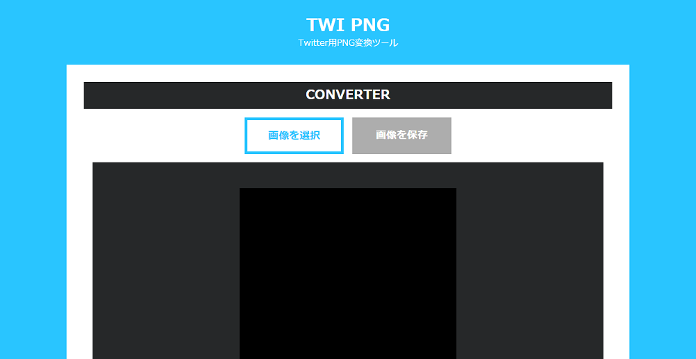
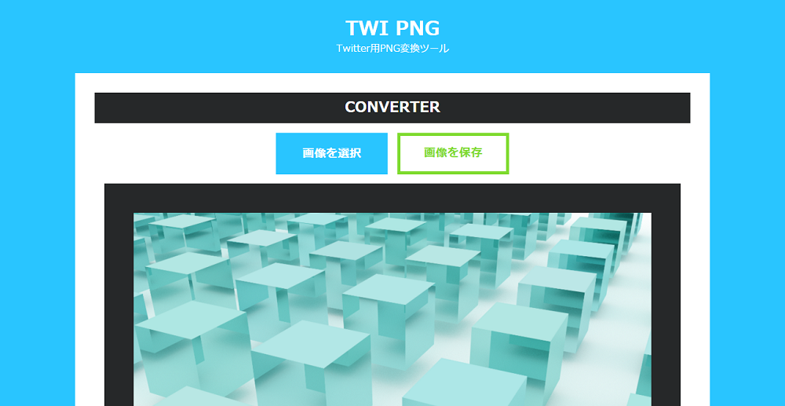
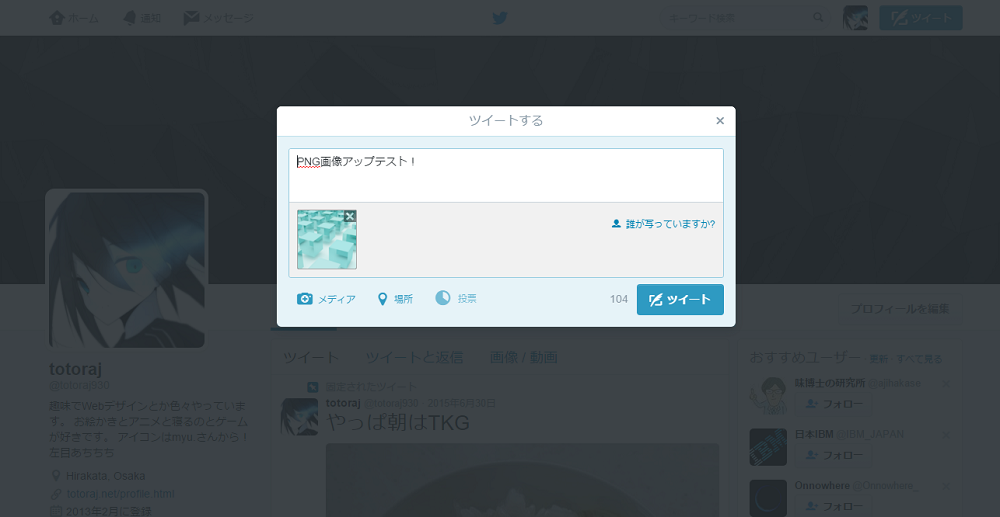

画像ファイルをドロップして選択
※3MB以上の画像はTwitterで圧縮(JPEGに)されてしまうので注意してください。
※※モード選択は画像を選択する前に行ってください。
※ボタンで保存できないときは上の画像から保存してみてください。
※大きすぎる画像を読み込むとブラウザが固まることがあります。(2000*2000pxまでをおすすめします)
※確実にPNG画像としてアップロードできるとは保証できません。
※ABOUTにて仕様を確認してください。
スマホのクライアントからつぶやくとJPEGになってしまうかもしれません。
「TwI PNG」はTwitterにアップロードしたPNG画像がJPEG画像に変換されるのを防ぐための画像変換ツールです。
具体的な処理は画像の左上1pxを不透明度99%にしてPNG32(透過あり)の状態にするというものです。
HTML5のCanvasを使用していますので処理はブラウザ上で完結しています。
サーバー負荷とかは一切ないのでいくらでも変換しちゃってください！
「透明度を戻す」にチェックを入れてTwI PNGで変換した画像を選択すると左上1pxの不透明度を100%に変換するようになります。
変換した画像の不透明度を元に戻したいときにお使いください。
モード選択は画像を選択する前に行ってください。
TwI PNGで変換した画像以外ではまったく意味がないのでご注意ください。
左上の1pxが(限りなく不透明に近い)半透明になります。
PNG画像としてツイートできることを確認していますが保証はできませんのでご了承ください。
大きすぎる画像を読み込むとブラウザが固まります。
いつTwitterの仕様変更で使えなくなるかわかりません！ご注意ください！
Twitter: @totoraj930
腐水(stkchp)さん
ファイルを貼り付けで選択する機能を作っていただきました。ありがとうございます！
変換したい画像を選択します。
変換された画像を保存します。
あとは保存した画像をつぶやくだけです！
